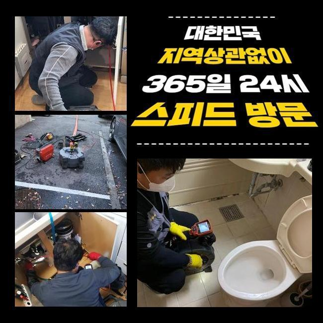
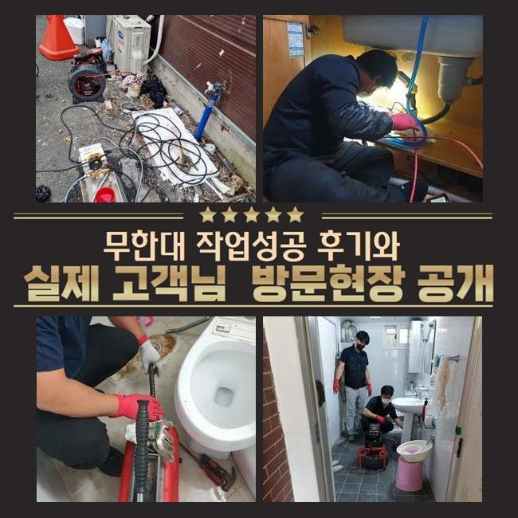
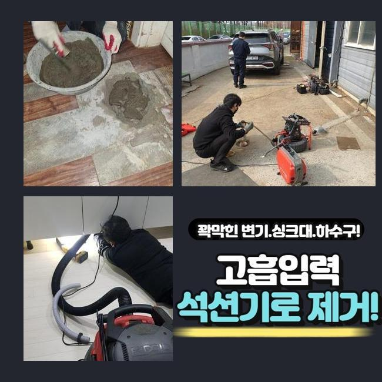
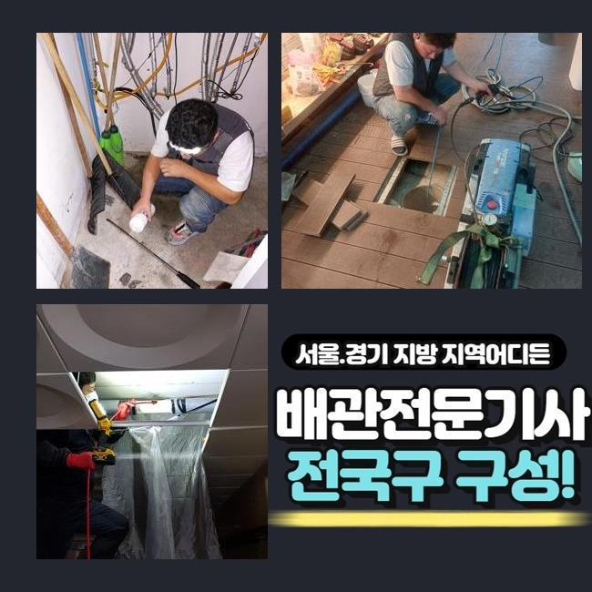
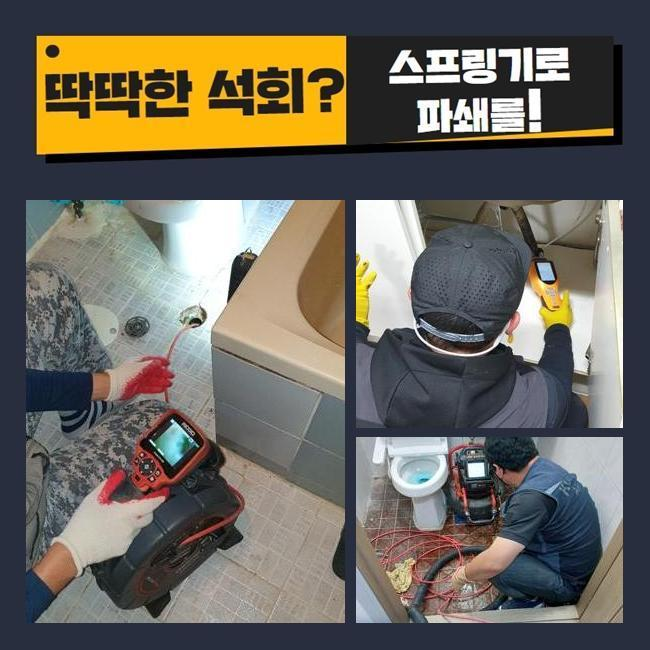
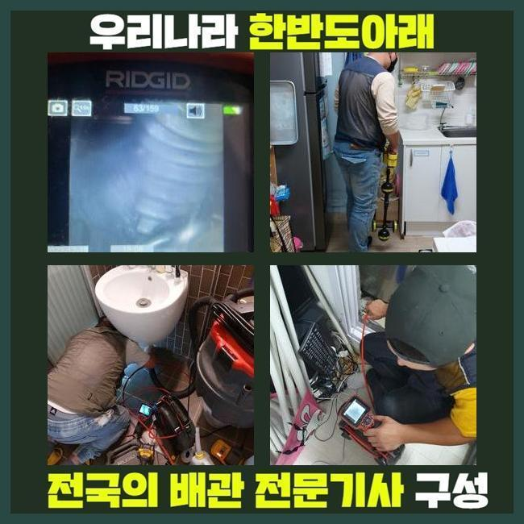
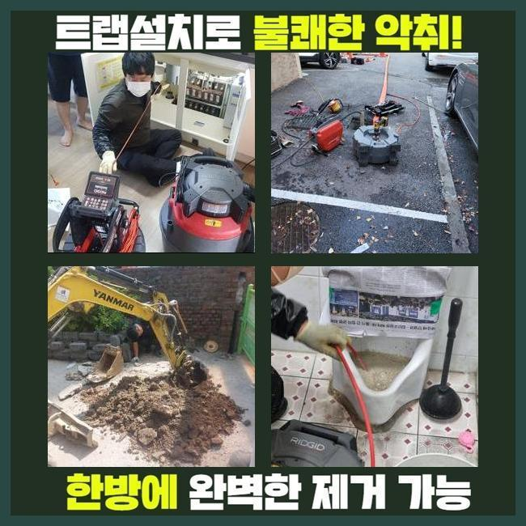

🏠 도봉 쌍문동욕실뚫음 창동 배수구뚫기 배관공사
용인 하수구막힘 전문 시공 후기

📋 작업 개요
- 위치: 용인
- 서비스 유형: 하수구막힘, 배관막힘, 역류해결, 뚫는업체, 배관청소, 고압세척, 설비공사, 악취차단
- 작업 일시: 2025. 1. 2. 12:41
- 업체명: 하수구수사대 (010-5615-2118)
🔍 문제 상황
도봉 쌍문동욕실뚫음 창동 배수구뚫기 배관공사
아늑해야할 가정안에서 가끔 일어나는 트러블이 있답니다
대표로 배수구막힘을 알려드릴수 있겠네요
배수가 안된다면 고약한 냄새가 올라올뿐만 아니라 평상적인 생활의 괴로움을 증가시키죠
배관막힘으로 화장실이용도 원활히 못하며 역류증세까지 보인다면 최악의 상황까지 치닫게 될것입니다
이번 글에선 투룸 세탁실 배관막힘으로 여러 기기를 동원해 정리한 공정을 설명드릴게요
의뢰자께서는 다용도실 안에 배치된 드럼통돌이세탁기 배수관에서 배수문제가 발발하였다며 저희들에게 의뢰를 진행하셨는데요
작업차 안에 샤프트분쇄기와 흡입기기 그것에 더하여 내시경cctv까지 챙긴후 고객세대로 이동했습니다
도착해 보니 오취가 가득한 상황이었고 이물질이 토출되어 있는 정황까지 관측할수 있었답니다
세탁버튼을 눌러서 물을 내려보려 했지만 도리어 넘쳐버리는 형국이 일어났다고 토로하셨습니다
세탁한 성분만 역류된것이 아니고 여러종류의 침전물까지 배출되는 모습이었어요
어떤 설비에서는 개수대와 다용도실의 배관이 연결된 경우도 있습니다
그부분 역시 진단해 보았어요
막힘문제를 면밀하게 알아보려 의뢰자께 화장실이나 타 배관이 막혔거나 역류증세는 없었는지를 확인해봤어요

🔎 원인 분석
💡 전문가 진단: 정밀 진단 장비를 사용하여 슬러지의 고착 여부를 판명하고 타격/세척 작업을 실시했습니다.
그저께 물이 안내려가 슈퍼마켓에서 구매했던 뚫어뻥과 베이킹소다를 투입하신적이 있다 말하셨어요
그것에 기반하여 생각해보았더니 주방설비 부근의 하수관에 막힘상황의 동기가 있겠다고 추정되었죠
저희들이 방문한 지점의 역류를 처치하려 사유를 찾아보기로 하였죠
내시경기기를 활용하여 파이프 내측을 조사하기로 한거죠
배수공이 차단되어 내시경마저 안들어갈땐 물청소가 가능한 고압흡입기로 하수관의 노폐물을 처치합니다
이러한 과정으로 공사시간을 축소시킬수 있는거죠
세정중 다양한 폐수와 고형물들이 배출된것을 확인하였는데요
그러나 해당공정만으로는 본질적인 정체이유가 어떠한건지 밝혀내지는 못했죠
초기에 실행한 흡입장비로 소제할수 없는것들이 상당하였기에 즉시 배관내시경을 투입시켜 정체가 일어난 파이프를 관찰하기로 했어요
상태를 자세하게 조사하니 해변가에서 자주보는 모래 성분이었답니다
빨래를 하는 과정에서 배출된 상황일 가망성이 높았죠
의뢰자께 여행일정이 있으셨는지 물어보았더니 부산쪽의 해변가에 놀러가셨다고 말해주셨어요
우선 눈에보이는 잔재들을 처치하고 한층 공격적으로 뚫음시공을 하기로 합니다
그리고나서 하수도 곳곳을 처치가능한 기계들을 활용하기로 했어요

🔧 작업 과정
배관내시경을 활용하는 까닭은 막힘이 일어난 동기를 분명히 파악하고 물막힘을 해소하려는 목적인데요
석션기기로 세정을 끝마치고 가느스름한 호스줄에 붙어있는 내시경cctv를 이용하여 관로 안을 진단해 보았습니다
후미진 위치까지 살펴보았고 본질적인 막힘원인을 인지할수가 있었네요
이처럼 배관에서 일어난 고장은 여러종류의 변수들에 의해서 나타나게 되며 정리방법이 간소한것도 아니죠
그렇기때문에 전문적인 기기들을 토대로 공정을 이어나가야 무난하게 마무리지을수가 있죠
혹여 대강 사태를 정리하려든다면 더욱더 막힘이 증가할수 있단 것을 꼭 기억해주세요
배수관 군데군데를 내시경카메라로 점검하고 있답니다
관의 기장은 우리의 예상보다 큰편이고 구성도 난삽하여 직시해서 검증하기에는 어려운 부분이 많습니다
그럴때 작은 내시경설비가 제몫을 할수가 있답니다
내시경cctv를 이용해서 안쪽을 꼼꼼하게 조사하니 불규칙한 석회성분과 모래성분들이 엉겨붙은 상태였습니다
이러한 고형물들은 물과 섞이지 않아서 바위와 같이 굳기 쉽죠
미세한 이물들은 배수관을 통해 쉬이 정화조쪽으로 향하겠지만 일시에 그 성분들을 투입시켜버린다면 이곳처럼 막힘이 생길수 있는거죠
그것에 더하여 막힘이 지속되면 단단한 이물질층이 생겨나기도 합니다
슬러지의 성격에따라 쓰는 기기가 달라집니다
예시를 들어 헝겊등의 부피가 큰 물질이 있다면 고리가 달린 도구를 써서 꺼낸다음에 흡입기계로 관로 안을 청소해야 됩니다
혹여 이렇게 아니하고 플렉스샤프트작업을 곧장 하면 하수관 내측이 한층더 안좋아질수 있답니다
이물들이 특정한 공간에 많이 모여있다면 그것을 쪼개주는 분쇄공정을 속행하는데요
이장소는 돌맹이들과 뒤엉켜있어서 그걸 샤프트로 제거하고 뚫음을 시행하였죠
이곳에서는 전반적으로 누적된 잔재들을 소제하고 내시경설비로 거듭 관찰을 실시했어요
그후 잔류하는건 샤프트기기로 말끔히 처리하고 즉각 통수관련 검사를 실시했는데요
이상없이 속시원히 소멸되는걸 목견하게 되었습니다
시공과정에서 배출된 폐기물들을 전부다 정리하여서 폐기하는것으로 업무를 마무리하였죠


✅ 작업 완료
해당되는 물막힘을 사전에 방지하려면 정기적으로 하수구 점검했고 세척해야 하겠죠
주방시설의 배수설비에선 다양한 노폐물들이 물막힘을 야기하고 역류를 일으킬때가 많아요
해당 상황에 직면하면 지체하지말고 즉각적으로 전문가를 찾아보시는게 합리적인 선택입니다
일반인이 다룰수있는 범위는 제한이 뒤따르고 트러블이 더욱더 안좋게되는 경우도 자주 볼수 있어요
전문가의 분쇄작업이나 고압세척은 단순히 일상을 정상화시키는걸 넘어서서 청결을 지속하는데 필수입니다
또 그문제가 지속해서 방치되버리면 주변 이웃들에게도 손실을 주기도 한다는걸 기억하셔야 해요




⚠️ 하수구 배관 막힘 예방 및 관리 가이드
- ✅ 머리카락, 비닐, 물티슈 등 물에 분해되지 않는 이물질은 하수구 유입을 절대 금지해 주세요.
- ✅ 하수구 거름망을 씌우고 모여진 이물질은 주기적으로 쓰레기통에 바로 비워주셔야 합니다.
- ✅ 배관 노후가 심할 경우 이물질이 더 쉽게 걸리므로 주기적인 배관 세척(고압세척 등)을 권장합니다.
- ✅ 작업 후 1년 이내 재발 시 하수구수사대에서 무상 A/S 보증 서비스를 제공합니다.
💡 핵심 정리
- 확실한 장비 작업(내시경 점검 및 샤프트 스케일링)으로 원인을 뿌리 뽑습니다.
- 작업 후 1년 이내에 동일한 부위 재발 시 100% 무상 A/S 서비스를 보장합니다.
- 서울 · 경기 · 인천 전 지역에 24시간 언제든 긴급 출동할 수 있도록 항시 대기 중입니다.
❓ 자주 묻는 질문 (FAQ)
🚨 용인 하수구막힘 문제로 고민이신가요?
정확한 원인 진단과 확실한 시공으로 재발 없는 해결을 약속드립니다.
24시간 긴급 출동 | 서울 · 경기 · 인천 전지역 | 1년 내 재발 시 무상 A/S